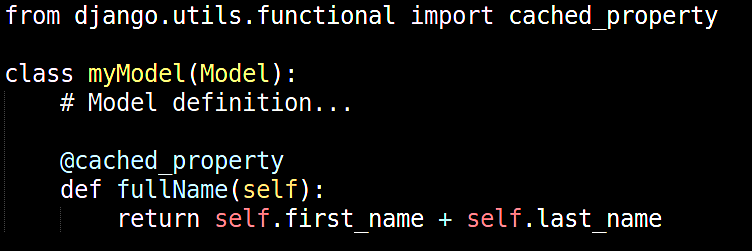
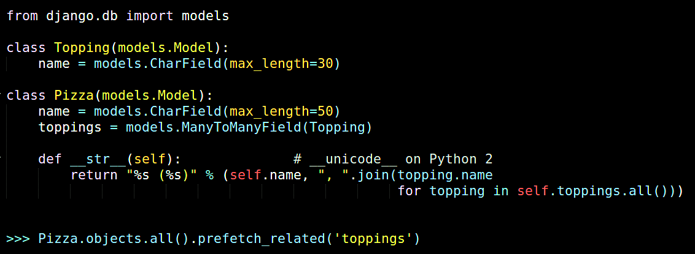
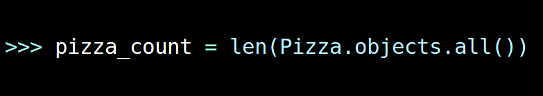
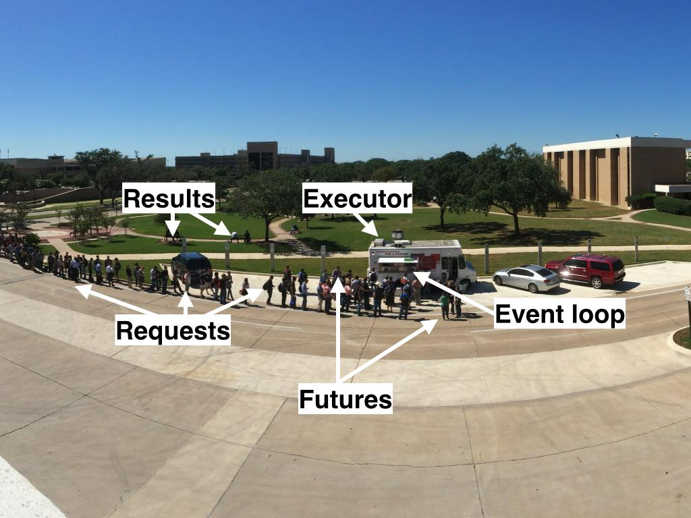
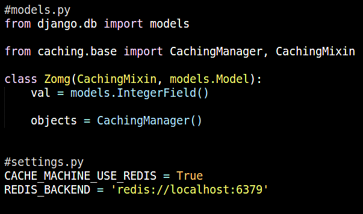
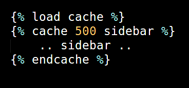
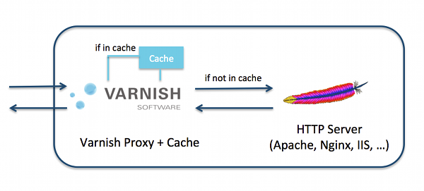

Scaling Django to the Sky
How small decisions can make a big difference
!# Created by = Naren Arya; Social =@Narenarya3
WHOAMI
I am a
-
Python & JavaScript programmer
-
Linux & Books lover
-
DevOps Engineer by profession
-
Blogging & Chess are favorite hobbies
PART-1
Design Optimization
+
Stack Optimization
==
Speed
Thumb rule of MVC
In most cases web application wastes it's time in interacting with database. So Database is the slowest part of any web framework.
Evil side of Django ORM
Myth: Django ORM is dead easy to use in a web application
Truth: Django ORM can make a web application dead slow
Tips for code optimization
The techniques those can reduce the DB hits siginificantly:
- Advanced ORM implementations
- Query caching
- Django template caching
- Non-blocking code
- Alternate data stores
ORM factors
Cached Properties
Use cached proerty to avoid multiple db queries

Prefetch and Select related
In a single query we can fetch the related objects.Don't make multiple queries for every thing.

How easily one can add a bottleneck to Django
A novice developer's simple mistake at 20 places can cost you more servers

Mistakes! Mistakes!
We all are doing basic mistakes
like
... bad design ...
... writing inefficient code
not analyzing latest documentation...
Which can have greater performance bottlenecks
Other factors
//
-
Non Blocking Django Code
- Use Queue and Job systems
- Spawn non-blocking IO from Django
-
Caching internal components
- Query Caching
- Template Caching
Options for Non-blocking code

- RabbitMQ + Celery
- asyncio (Python 3) || future-requests (python 2.7+)
Options for query caching

Options for template caching

- Must use Django template caching
- Cache-Machine provide support for Jinja2 templating
PART-2
Stack Optimization
“If you are going to kick a tiger in the ass, you’d better have a plan to deal with the teeth”
- Tom clancy
Essential components
- Load balancers
- Web accelarators
- Cache backends
- Database SQL vs NoSQL
Options for Stack
These open source software proved worthy in powering huge web sites like
Instagram, Disqus.
- Load balancers - HAProxy
- Web accelarators - Varnish
- Cache backends - Redis, Memcached
- Database SQL vs NoSQL - MongoDB, PostgreSQL JSON store
Importance of Load balancing
With help of floating IP we can create a cluster of load balancers in front of Django application servers
Nginx Vs Varnish
Which is better web accelarator?

Apples are not Airplanes
- Databases
MongoDB vs Postgre SQL JSON store
- Datastores
Redis vs Memcached